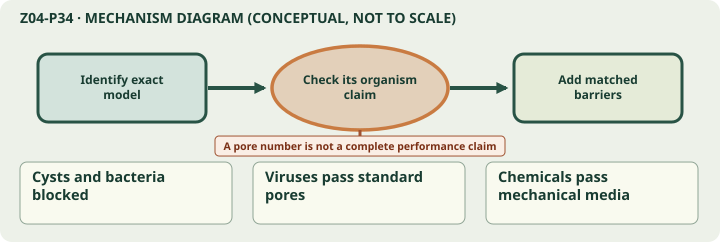

Z04-P34 · Water · New manuscript
Understand what pore-size filtration removes and what passes through
Match mechanical filter pore ratings accurately against protozoa, bacteria, viruses and dissolved chemicals.
When it applies · Choosing or using any portable backcountry or emergency point-of-use water filter.
Equipment · Filter specification sheet or label showing absolute pore rating or independent certification (NSF/ANSI 53, 55 or EPA purifier standard).

Actions
- Identify the exact model and treatment claim. Nominal and absolute pore ratings differ. Product certification or test evidence must cover the organism of concern.[W04, W20, W21]
- Ordinary field filters often miss viruses. Follow a verified microbial treatment method for remaining germs. If harmful chemical or toxin contamination is suspected, use another safe source and follow local advice.[W01, W04, W21]
- Confirm whether any activated-carbon stage is strictly for taste/odor or holds independent NSF certification for specific listed chemicals; carbon alone does not disinfect microbes.[W21, W22]
Failure recognition · Assuming a 0.2-micron hollow-fiber filter stops viruses or removes agricultural nitrates, fuel or heavy metals.[W04, W21, W22]
Verify · State the filter's exact certified target classes and name the second barrier covering any remaining microbial gaps.[W04, W21, ED]
Stop or change course · Never rely on an unlabeled, uncertified or improvised sand/charcoal filter for microbial or chemical safety.[W04, W08, W21]
Evidence and editorial notes
- W01 · CDC · How to Make Water Safe in an Emergency (2024-09-19)
- Section: Water with fuel or toxic chemicals in it · Conditions: Suspected fuel, toxic chemicals or radioactive contamination
Support: Use a different safe supply. Standard boiling and microbial disinfection do not make this water safe.
Limitations: Does not list contaminant-specific lab remediation; applies to emergency consumer decisions only. · Conflicting evidence: None across CDC/EPA emergency guidance.
Editorial note: Used as upstream hard-stop gate prior to any field treatment card. · Specialist reviewer: Drinking-water safety and public health
Primary source · checked 2026-11-24 - W04 · CDC · Water Treatment Options When Hiking, Camping, or Traveling (current web edition)
- Section: Water treatment methods > Filter and disinfect · Conditions: Untreated backcountry water; suitable devices and directions
Support: Filter capability varies. Filtering then disinfecting addresses gaps left by typical portable filters. Follow both manufacturers' directions.
Limitations: Effectiveness depends on pore rating, cartridge integrity, and manufacturer-verified test standards. · Conflicting evidence: None; consumer claims outside NSF/EPA standards are excluded.
Editorial note: Used to require multi-barrier pairing rather than relying on one filter alone. · Specialist reviewer: Drinking-water treatment specialist
Primary source · checked 2026-11-24 - W08 · CDC · How to Make Water Safe in an Emergency (2024-09-19)
- Section: Boil > Steps for boiling water > cloudy water · Conditions: Cloudy water with no identified chemical hazard
Support: Settling or cloth clarification only prepares water for treatment. Do not count it as disinfection.
Limitations: Removes coarse suspended solids only; dissolved toxins and microbes remain. · Conflicting evidence: Contradicts folklore claims that sand/cloth straining yields potable water; CDC governs.
Editorial note: Always depicted upstream of microbial treatment with an explicit barrier line. · Specialist reviewer: Drinking-water safety
Primary source · checked 2026-11-24 - W20 · CDC · Choosing Home Water Filters and Other Water Treatment Systems (current web edition)
- Section: Removing parasites; Check the filter label · Conditions: Surface water impacted by wildlife, livestock, or runoff
Support: For parasite removal look for absolute pore size one micron or smaller or a specific certified cyst reduction/removal claim. NSF/ANSI 53 or 58 without the cyst claim does not establish that capability.
Limitations: Does not establish removal of viruses, dissolved chemicals or all other hazards. · Conflicting evidence: Clarifies gap left by single-barrier chlorine disinfection.
Editorial note: Core evidence for filter-plus-disinfect multi-barrier design in Z04. · Specialist reviewer: Drinking-water microbiology and public health
Primary source · checked 2026-11-24 - W21 · CDC · Choosing Home Water Filters and Other Water Treatment Systems (current web edition)
- Section: Check filter label for which germs and chemicals it removes; filter types · Conditions: Exact point-of-use model and a known target
Support: Verify the named independently tested reduction claim for the model. A treatment type or general standard number does not establish reduction for a different contaminant.
Limitations: Compare the product label and actual conditions; follow the active water advisory. · Conflicting evidence: See A02 claim audit for boundaries.
Editorial note: Frames equipment selection around verified contaminant classes and certifications. · Specialist reviewer: Drinking-water treatment specialist
Primary source · checked 2026-11-24
Current assessment · A04-W21 (2026-11-25) · Bounded support newly confirmed (A04): Validate the product and contaminant by its actual tested claim. A label or certification category does not validate other contaminants. Limits: Specialist review PENDING (Drinking-water treatment specialist); publication HOLD. All release decisions pending. - W22 · US EPA · National Primary Drinking Water Regulations (current web edition)
- Section: National Primary Drinking Water Regulations · Conditions: Surface or groundwater near agriculture, industry, mines, roads, or old plumbing
Support: Regulated drinking-water hazards span inorganic chemicals (lead, arsenic, nitrate), organic solvents, pesticides, radionuclides, and microbes; microbial treatments do not remove dissolved inorganic or organic chemicals.
Limitations: Field observation cannot measure dissolved chemical concentration; laboratory testing is required. · Conflicting evidence: None; underpins strict chemical-rejection boundaries.
Editorial note: Explains why agricultural runoff, mine tailings, and road salt/fuel require source rejection. · Specialist reviewer: Environmental toxicology and drinking-water safety
Primary source · checked 2026-11-24
Source lineage · CDC backcountry treatment and filter standards; new manuscript · Classification · New manuscript.